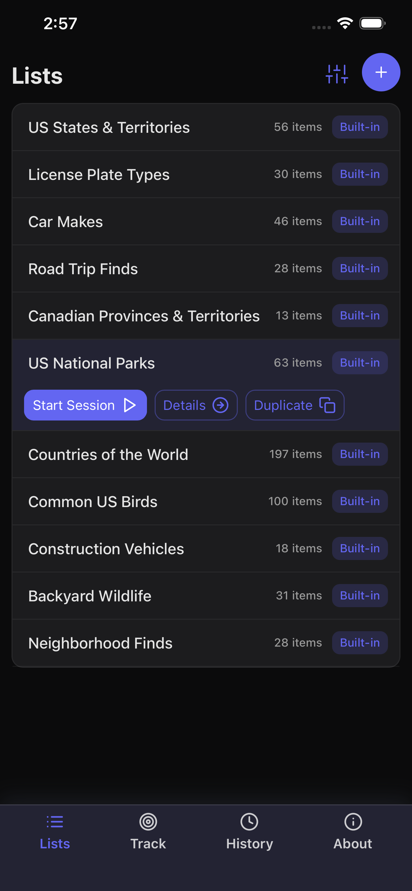
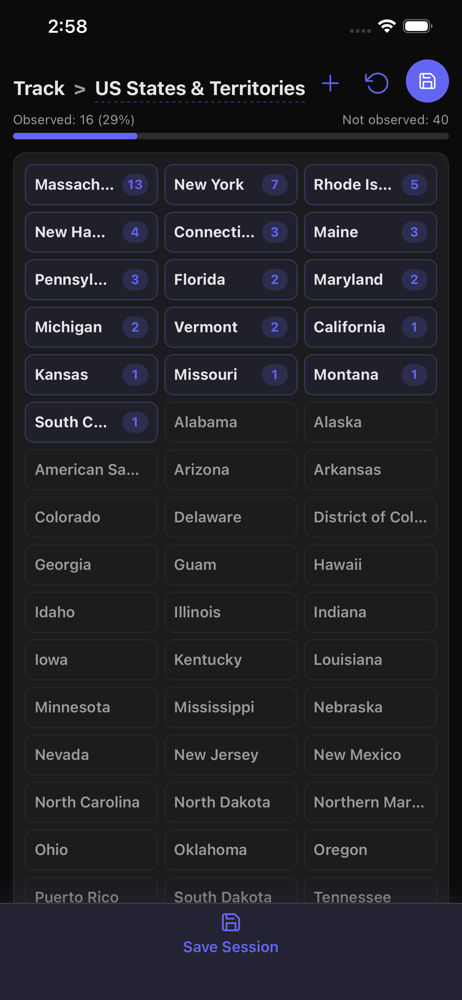
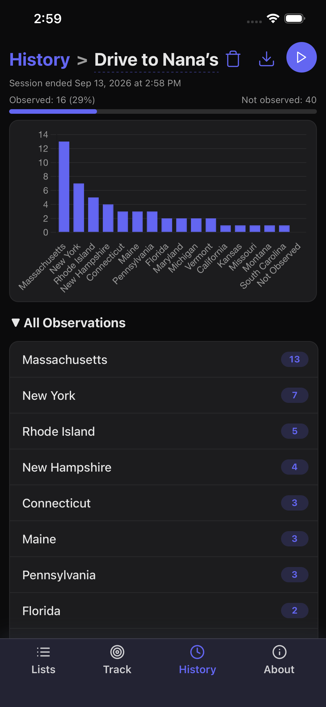

Start with a list
Use a built-in list or make one for the thing you want to notice next.

Observe the ordinary
Loglist turns any list into a quick observation tracker. Spot a license plate, bird, landmark, or anything else, then record it with a single tap.
Highlights
Use a built-in list or make one for the thing you want to notice next.

Focused, immediate controls keep observations out of your head and in the moment.

Save individual sessions and revisit exactly what made an outing memorable.

FAQ
You can start a session by selecting a list and tapping the "Start Session" button. You can also start a session by navigating to the Track tab and selecting a list from the dropdown menu. You can continue logging observations from a previous session by selecting that session in the "History" tab and tapping the "Restart" button.
Select the "Save" button to stop the session and save your observations. Only one session can be active at a time. If you want to discard the session, you must first select "Save" and then choose the "Delete" option on the History view.
Create an empty custom list by by tapping the "+" button in the top right of the main Lists screen. Alternatively, duplicate an existing list by selecting the "Duplicate" option. Select the "Details" option for any list to view the current items; items in a custom list can be added, deleted, or renamed. Built-in lists cannot be modified. Add an item to a custom list by tapping the "+" button on the list's details view. Delete an item by selecting it and pressing the Trash icon at the right of the row. Rename the item by selecting it and tapping the name of the item to enter edit mode.
If you tap an item by mistake, use the undo option to remove the last observation. Loglist keeps a history of your last ten observations, which can be undone in reverse order.
If you realize you need to include another item in the list while you're tracking, simply hit the "+" button in the top right of the screen to add it. The new item will be available for selection immediately. If you are tracking items from a custom list, the item will be added to that custom list. If you are tracking items from a built-in list, this will duplicate the built-in list to create a new custom list with the new item.
Yes. You can select the "Download" option on the History view to export your observations as a CSV file.
Yes. Loglist is designed to work offline, so you can track observations anywhere without an account or connection.
Yes, it's free to download with no in-app purchases. No account, login, or email address is required - just install and go.
Yes. In the History tab, select the session you wish to remove and tap the Trash icon that appears on the right of the row. Deleted sessions are removed immediately and cannot be recovered.
No. Built-in lists cannot be deleted or modified. If you want to make changes, choose the "Duplicate" option to copy the built-in list. You can then rename the new list and edit the items in it.
I'm sorry about that! Built-in lists are provided for fun and general inspiration only. I make no promises about the accuracy, completeness, or significance of their contents. Feel free to create an issue on GitHub if you have a critical suggestion.
I built this app to play the "License Plate Game" with my kids during longer drives. We were originally using the Notes app to to track which states' plates we saw, and I thought it would be fun to have a dedicated app for it. Of course, there are plenty of license plate tracking apps on the App Store, so I adjusted the vision for this app to be something more generic - more of a framework for counting observations from arbitrary lists, not a specialized license plate spotting app. And along the way I came up with a few new "I Spy" type lists for our family road trips and other adventures.
Support
If you run into a problem, please start by checking the FAQ above. If you still need help, please email me with a description of the issue and your device details.
Email supportGitHub
Check out the app's source code on GitHub. Submit issues if you find a bug or have a feature request.
View repositoryI'm Abby Skofield, a Massachusetts-based software engineer. If you'd like to connect professionally, find me on LinkedIn.
Connect on LinkedInPrivacy policy
Loglist does not collect, share, or sell personal information. Lists and sessions are stored locally on your device. There are no accounts, analytics, or third-party tracking services. For privacy questions, contact abbyskocodes@gmail.com.
Effective date: September 5, 2026. If this policy changes, the effective date will be updated.